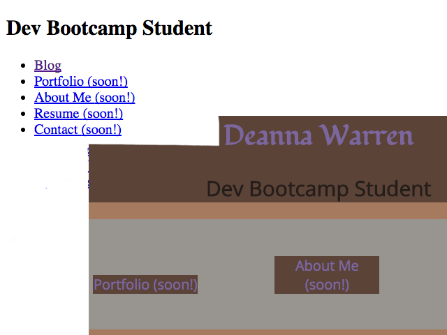
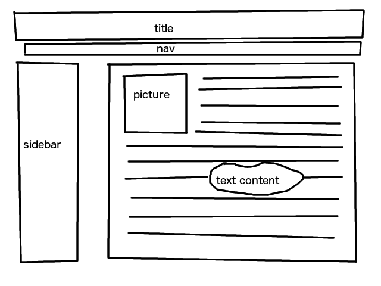
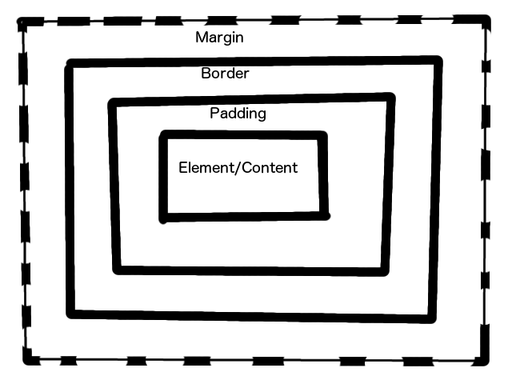

Making Space Work For You - Padding, Border, and Margin - 9/24/15
DISCLAIMER: THE FOLLOWING IS FROM A SERIES OF POST MADE DURING THE FIRST HALF OF MY TIME AT DEV BOOT CAMP, AND THEREFORE MAY CONTAIN INCONSISTENCIES AND MISINFORMATION AS THEY ARE WRITTEN IN THE WEEK I LEARN A NEW CONCEPT. TAKE WITH A GRAIN OF SALT.
Welcome back, dear Reader. Today we are going to discuss the differences between padding, borders, and margins. Whoa! Getting a little ahead of ourselves, aren't we? Sure, those terms mean something, but where's the context? These are style attributes that can be applied to elements on a web page. Let's break it all the way down.
Looking above, we see two different types of structures. What would you say if I told you these were the same exact code, but with just a little added? In the days of the early internet, HTML (Hyper-Text Markup Language) alone was used, resulting in pages that looked like the left side of this picture. As time went on, CSS (Cascading Style Sheets) were added to add a style element to the pages and make them look better. CSS is a separate file full of style attributes, and it is linked from within the HTML file, so although you never see it, it is applied wherever you look on a web page. This was later suplemented with programming languages to make things happen on those websites, instead of being static pages, but that's a conversation for another day.
Now what we see above is called a wireframe. It is used by developers and designers to lay out what a page will look like, to enable them to code the HTML in such a way that when the CSS is written, the site will look how it is expected. This is a far better system than writing the code and having to constantly revise it to fix things that you didn't think about earlier! Looking at it, you can see that things are separated into different boxes. These are called elements. Now, each element has three things surrounding it, each set to 0 by default. These are the aforementioned padding, border, and margin. These can be increased to change the space around the element to be wider, thereby separating it from it's fellow elements. But why are there three, when it sounds like they do the same thing?
As you can see above, each of these different attributes can be edited to produce different resuts! The inside attribute closest to the element is called padding. It is transparent, and picks up the background color of the element if that color is different from the color outside of the element. The border can be colored, and can be fasioned in different styles, in any color you wish. This is useful for making a border that is visual, but can also be useful to remember when it's not visible. When invisible, it separates the padding and the margin. The margin, like the padding, is also transparent, but this time shows the background color from outside the element. So if you wanted a blue box that extended outside the element, and extra space between that blue box and the next element, with no line between? You would set a distance for your padding and your margin, but leave the border at 0 pixels, rendering it invisible. That doesn't mean it's not there, so it's not something to ignore!
This information is extremely helpful for developers, but is interesting to look for even if you're not in web development. Now that you know it's there, you'll be able to recognize these elements if you look for them.